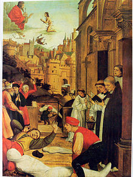
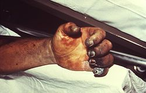
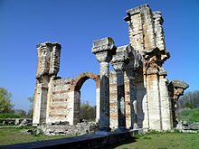
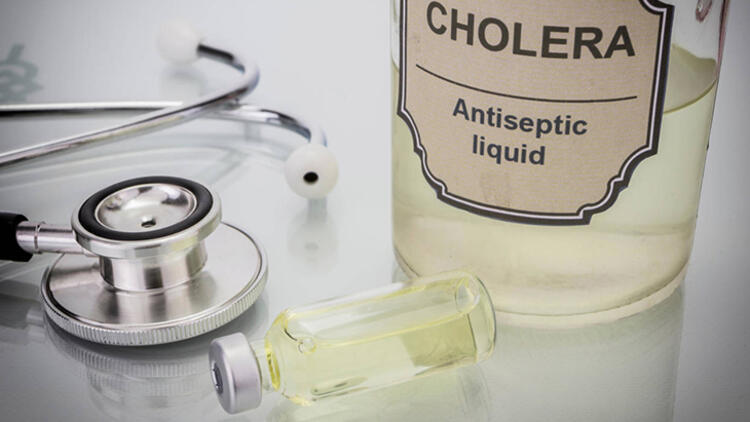
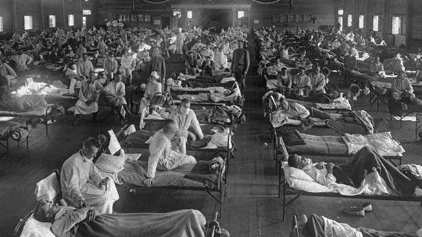

Jüstinyen Vebası:
İki asır süren salgın (MS 541-750)
Hastalıklar tarihin her dönemi bizleri etkilemiştir. Kimin gelip geçmiş kimi de ağır hasarlar vermiştir. Özellikle tıbbın gelişmediği dönemlerde yayılan ufak bir salgın tüm dünyada milyonları etkileyebiliyordu. İşte o hastalıklardan biri de Jüstinyen Vebasıydı. Ortaya çıktığı dönemden sonra iki yüz yıl boyunca devam eden Jüstinyen Vebası neden bu kadar çok yayılmıştı? İşte en ölümcül salgınlardan birisi olan Jüstinyen Veba Salgını.

Yayılmaya başladı
Tarihler 541’i gösterdiğinde İmparator Jüstinyen yeni bitirttiği Ayasofya’nın keyfini çıkarıyordu. Konstantinopolis’i eğlence ve kültür merkezi haline getirmişti. Ancak yavaş yavaş yaklaşan bir tehlike vardı. Bir anda ortaya çıkan veba salgını herkesi esir almaya başlıyordu.
Mısır’dan geldi denildi

Doğu Roma İmparatorluğu veba ile karşı karşıya kalmıştı. Mısır ile yakın ilişkileri vardı. Yapılan tahminler Mısır’daki limandan gelen gemilerle birlikte veba taşıyan farelerin de ülkeye geldiği yönündeydi.
Bambaşka bir yer

Ancak yapılan son araştırmalar bunun böyle olmadığı ortaya çıktı. Hunlar ile yayıldığı, farelerin yanı sıra sulara atılan at ölülerinden vebanın yaygınlaştığı bilgisi ortaya çıktı. Orta Asya’da da Doğu Roma’da ölenlerin ölüm nedenlerinin aynı bulguları rastlanmıştı.
Veba her yerde
Konumuza dönecek olursak, Doğu Roma topraklarına giren veba önce Mısır’ı, sonra Filistin, Suriye ve Anadolu topraklarına kadar uzanmıştı. Konstantinopolis de etkilenmiş ve hastalık her yerde görülmeye başlamıştı.
Giriş çıkış yasaklandı
İmparator Jüstinyen hemen önlemler almaya başladı. İlk olarak şehre giriş çıkışları yasakladı. Bir nevi karantina uyguluyordu. Kapıları vali bizzat kendisi kontrol ediyordu, işi sıkı tutuyorlardı. Ama unuttukları bir şey vardı; Fareler.
Engellenemediler
Fareler malum ufak tefek bir hayvan ve her yerden geçip gidebiliyor. Haliyle ne kadar önlem alınırsa alınışın veba mikrobu taşıyan fareler şehre girmişti. Bir hafta sonra şehrin fakir kısımlarında veba salgını görülmeye başlandı. Asillerin yaşadığı bölge ve Büyük Saray'ın çevresi ise askeri birliklerce karantinaya alındı. Oralara giriş ve çıkışlar her ne pahasına olursa olsun kesin olarak yasaklandı.
Bir anda binleri buldu
Başlangıçta birkaç yüz ile sınırlı kalan veba ölümleri bir anda binlere ulaşmıştı. Sarayın hastanesi Sampson Hastanesi veba karşısında çaresiz kalmıştı. O kadar çok ölüm oluyordu ki insanları gömecek yer bulamıyorlardı. Tek çare ölü bedenleri denize atmak oldu.
İmparator bile hasta oldu
İmparator Jüstinyen çaresiz bir şekilde sarayında oturmak istemiyordu. Kıyafet değişip halkın arasına karıştı. İnsanların acılarını birebir yaşadı. Ancak bu kararı onu da hasta etti. Veba saraya kadar uzanmıştı. Her sabah 8’de kalkan imparator o sabah uyanmamış, imparatoriçe şüphelenmiş, odasına gittiğinde imparatorun acılar içinde olduğunu görmüştü. Doktorlar çare bulamıyordu, ölüm kaçınılmazdı.
İmparatoriçe elleriyle baktı
Hastalanan imparatora eşi elleriyle bakmış, birkaç ay içinde hem şehir hem de imparator eski günlerine dönmeye başlamıştı. Ancak ölüm hala kol geziyordu. Salgının adı da imparatorun adıyla anılmaya başlamıştı.
İki yüz yıl sürdü
Jüstinyen Veba Salgını o yıl içinde bitmedi. O kadar uzun süren bir hastalık süreci oldu ki iki yüz yıl boyunca can almaya devam etti. Ölen insan sayısı ilk salgında 25 milyon, devam eden süreçte de 50 milyon insanın hayatına mal olmuştu. Ancak bazı uzmanlar bu sayının 100 milyon olduğunu söylüyorlar. Bugünkü rakamlara göre 600 ila 800 milyon insan hayatını kaybetmesi gibi duruma denk gelmektedir.

Aziz Sebastian, Justinianus Veba sırasında vebadan etkilenen bir mezar kazıcısının hayatı için İsa'ya yalvarır. (Josse Lieferinxe, 1497-1499 dolayları)
Hastalık: Veba
Yer: Avrupa
İlk vaka: 541 AD - 542 AD

Justinianus Veba Salgınının özelliği elin nekroz olması. (1975 veba kurbanının resmi)

550 yılında Bizans İmparatorluğu'nun haritası. (Justinianus Veba Salgını'ndan 10 yıl sonra) Justinianus'un fetihleri yeşil gösterilmiştir.

Filippi'de kısmen tamamlanmış bazilika; inşaatının Justinianus Veba Salgını yüzünden yarım kaldığı düşünülmektedir.
Bunlar da İlginizi Çekebilir


